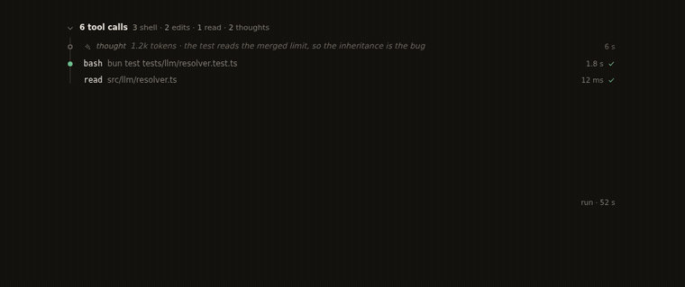

One variant, kept because it is the one that was picked: no box, a single header line naming
what the run touched, and the children hanging off a left rail.
Open it full size, or
in light.
Opening

rail draws down, rows and dots stagger, fold expands, then it holds